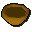
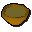

Stew

| Config name | stew |
| Item id | 2003 |
| Value | 20 gp |
| Weight | 1500g |
| Members | No |
| Tradeable | Yes |
| Stackable | No |
| Options | Eat |
| Defined in | scripts/skill_cooking/configs/cooking_inv/configs/stew/stew.obj |
Stew
It's a meat and potato stew.
How to make
| Skill | Level | XP | Ingredients | Tool | How | Where | Makes |
|---|---|---|---|---|---|---|---|
| Cooking | 25 | 90.0 |  Uncooked stew | use on object | range or fire | 1 can spoil into |
Quests
Biohazard Nature Spirit Troll Stronghold Underground Pass
Referenced in scripts
scripts/_test/scripts/cheats/cheat_bank.rs2scripts/areas/area_ardougne_west/scripts/doors.rs2scripts/areas/area_ardougne_west/scripts/mourner.rs2scripts/areas/area_burthorpe/scripts/death_cook.rs2scripts/areas/area_seers/scripts/bartender.rs2scripts/areas/area_varrock/scripts/gertrude.rs2scripts/levelup/scripts/levelup_unlocks_cooking.rs2scripts/player/scripts/consumption/consume.rs2scripts/quests/quest_biohazard/scripts/biohazard_journal.rs2scripts/quests/quest_biohazard/scripts/quest_biohazard.rs2scripts/quests/quest_druidspirit/scripts/ghast.rs2scripts/quests/quest_troll/scripts/quest_troll.rs2scripts/quests/quest_troll/scripts/troll_eadgar.rs2scripts/quests/quest_upass/scripts/kamen.rs2scripts/quests/quest_upass/scripts/sir_jerro.rs2scripts/skill_cooking/scripts/cooking_inv/scripts/stew/stew.rs2